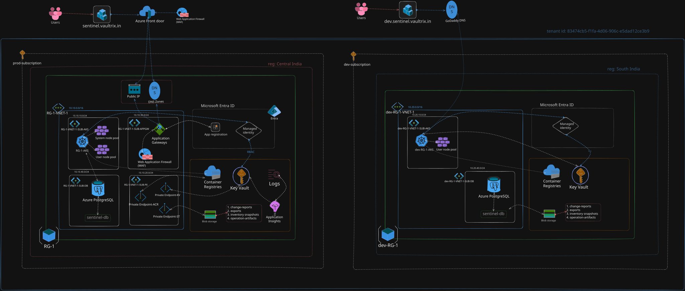

Diagram source: Excalidraw architecture provided for the Terraform production target. It shows the request path, VNet placement, AKS, private endpoints, and managed services.
A secure, private-by-default deployment for Sentinel using Front Door, WAF, AKS, private data services, managed identities, and environment-isolated state.

Diagram source: Excalidraw architecture provided for the Terraform production target. It shows the request path, VNet placement, AKS, private endpoints, and managed services.
| Group | Purpose |
|---|---|
| RG-1 | Production workload resources |
| RG-1-TFSTATE | Terraform state storage and lock protection |
| MC_* | AKS managed node infrastructure |
| Service | Security posture | Used by |
|---|---|---|
| Azure Key Vault | Private endpoint, RBAC, purge protection, soft delete | Runtime secrets, token keys, client secret, DB URL |
| Azure Container Registry | Premium, private endpoint, admin disabled, AcrPull for AKS | Application and migration images |
| PostgreSQL Flexible Server | Delegated subnet, private DNS, no public access, pgcrypto allow-list | Identity, inventory, audit, relationship and worker data |
| Storage Account | Private blob endpoint, versioning, soft delete, no public blobs | Login events and audit exports |